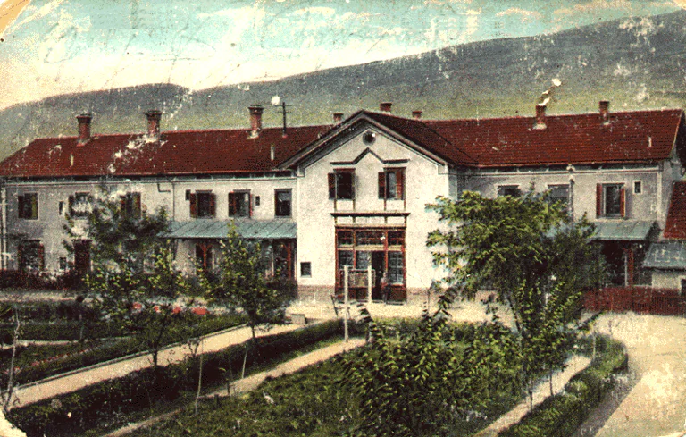
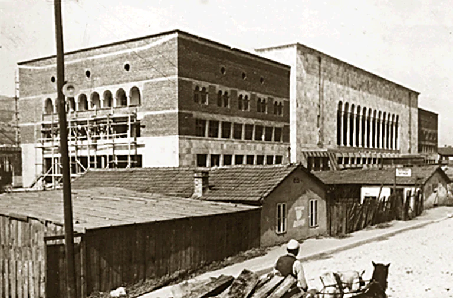

Το τρένο φτάνει
- Σενάριο και σκηνοθεσία
- Τράιτσε Πόποφ
- Οπερατέρ
- Μπράνκο Μιχαϊλόφσκι
- Έτος
- 1951
- Διάρκεια
- 00:09

Ο παλιός σιδηροδρομικός σταθμός από τα τέλη του 19ου αιώνα. Χτίστηκε το 1873 την εποχή της Οθωμανικής Αυτοκρατορίας. Στην καρτ-ποστάλ φαίνεται η κύρια είσοδος του σταθμού, και πίσω βρίσκονταν οι σιδηροδρομικές γραμμές. Η αρχιτεκτονική φέρει γνωρίσματα νεοκλασικού ύφους. Στο πρώτο πλάνο μια πωλήτρια γαλακτοκομικών.

Ο παλιός σιδηροδρομικός σταθμός από τα τέλη του 19ου αιώνα. Χτίστηκε το 1873 την εποχή της Οθωμανικής Αυτοκρατορίας. Στην καρτ-ποστάλ φαίνεται η κύρια είσοδος του σταθμού, και πίσω βρίσκονταν οι σιδηροδρομικές γραμμές. Η αρχιτεκτονική φέρει γνωρίσματα νεοκλασικού ύφους.

Ο πρώτος σιδηροδρομικός σταθμός. Φωτογραφημένος από την πίσω πλευρά. (αρχές του 20ού αιώνα)

Ο παλιός σιδηροδρομικός σταθμός, από την πίσω πλευρά. (αρχές του 20ού αιώνα)

Ο «νέος σιδηροδρομικός σταθμός» - η κατασκευή του άρχισε το 1937. Την 1η Δεκεμβρίου 1940 παραδόθηκε σε χρήση, αν και η αποβάθρα δεν είχε ολοκληρωθεί και οι εργασίες για τη μορφοποίηση των κιόνων ήταν ημιτελείς. Διακρίνεται για τη χρήση σύγχρονων μορφών και την ερμηνεία βυζαντινών, ρομαντικών και λαϊκών μορφών. Κατά τον καταστροφικό σεισμό της 26ης Ιουλίου 1963 κατέρρευσαν τα 2/3 του κτιρίου. Το υπόλοιπο 1/3 αποκαταστάθηκε και στεγάζει το σημερινό Μουσείο της πόλης των Σκοπίων. Σήμερα το κτίριο είναι μνημείο του καταστροφικού σεισμού της 26ης Ιουλίου 1963. Το σταματημένο ρολόι πάνω από την είσοδο του Μουσείου δείχνει 05:17, την τραγική στιγμή της 26ης Ιουλίου 1963.

Ο σιδηροδρομικός σταθμός κατά τον Β΄ Παγκόσμιο Πόλεμο.

Ο σιδηροδρομικός σταθμός μετά τον Β΄ Παγκόσμιο Πόλεμο (το σημερινό Μουσείο της πόλης των Σκοπίων), από την πλευρά της κύριας εισόδου.

Ο σιδηροδρομικός σταθμός μετά τον Β΄ Παγκόσμιο Πόλεμο (το σημερινό Μουσείο της πόλης των Σκοπίων), από την πλευρά των αποβαθρών.

Η αποβάθρα του σιδηροδρομικού σταθμού - 1940.

Ο σιδηροδρομικός σταθμός υπό κατασκευή - φωτογραφημένος από την πίσω πλευρά - Δεκαετία του 1940.

Ο σιδηροδρομικός σταθμός υπό κατασκευή - φωτογραφημένος από την μπροστινή πλευρά - Δεκαετία του 1940.

Καρτ-ποστάλ κολάζ που, μέσα από τέσσερις φωτογραφίες, παρουσιάζει την ιστορία των σιδηροδρομικών σταθμών των Σκοπίων.

Το νέο κέντρο μεταφορών. (Δεκαετία του 1980)

 Υδραγωγείο4 καρτ-ποστάλ
Υδραγωγείο4 καρτ-ποστάλ Καλέ30 καρτ-ποστάλ
Καλέ30 καρτ-ποστάλ Γέφυρες60 καρτ-ποστάλ
Γέφυρες60 καρτ-ποστάλ Προκυμαία58 καρτ-ποστάλ
Προκυμαία58 καρτ-ποστάλ Πλατεία46 καρτ-ποστάλ
Πλατεία46 καρτ-ποστάλ Κτίρια66 καρτ-ποστάλ
Κτίρια66 καρτ-ποστάλ Χριστιανικοί ναοί19 καρτ-ποστάλ
Χριστιανικοί ναοί19 καρτ-ποστάλ Μουσουλμανικά κτίρια33 καρτ-ποστάλ
Μουσουλμανικά κτίρια33 καρτ-ποστάλ Λέσχη Αξιωματικών29 καρτ-ποστάλ
Λέσχη Αξιωματικών29 καρτ-ποστάλ Θέατρο28 καρτ-ποστάλ
Θέατρο28 καρτ-ποστάλ Σιδηροδρομικός σταθμός13 καρτ-ποστάλ
Σιδηροδρομικός σταθμός13 καρτ-ποστάλ Σχολεία36 καρτ-ποστάλ
Σχολεία36 καρτ-ποστάλ Πάρκα12 καρτ-ποστάλ
Πάρκα12 καρτ-ποστάλ Αγορές18 καρτ-ποστάλ
Αγορές18 καρτ-ποστάλ Δρόμοι38 καρτ-ποστάλ
Δρόμοι38 καρτ-ποστάλ Πανόραμα I60 καρτ-ποστάλ
Πανόραμα I60 καρτ-ποστάλ Πανόραμα II30 καρτ-ποστάλ
Πανόραμα II30 καρτ-ποστάλ Κολάζ55 καρτ-ποστάλ
Κολάζ55 καρτ-ποστάλ Πλημμύρες9 καρτ-ποστάλ
Πλημμύρες9 καρτ-ποστάλ Σεισμός27 καρτ-ποστάλ
Σεισμός27 καρτ-ποστάλ Σκόπια 200026 καρτ-ποστάλ
Σκόπια 200026 καρτ-ποστάλ